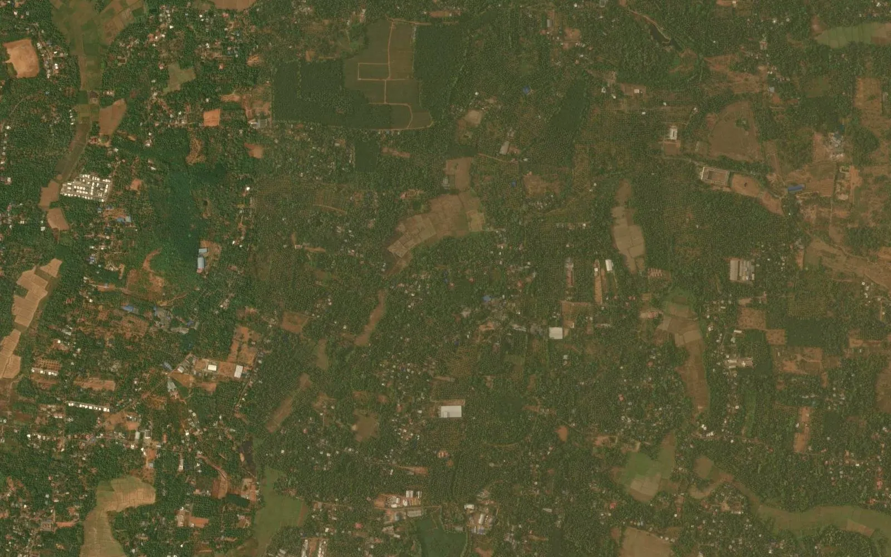

Kerala survey number map: block, sub-division and thandaper explained

In Kerala, land is identified by the district, the taluk, the village, the block number and the survey number, often with a sub-division. The village map shows where each survey number lies, while the written records, mainly the thandaper and the Basic Tax Register (BTR), say who holds it, how large it is and what kind of land it is. This guide explains how the map and the records fit together and what is needed when survey numbers must be seen on a satellite image or used in a GIS or CAD file.
1. Where the map and the record come from
Kerala land records are kept by the state Revenue Department and the Survey and Land Records Department. Revenue work runs through the district, the taluk and the village. The revenue office is the right place to start for any survey number, and its record is what counts in a transaction.
2. The terms you will meet
- Block number: a village is divided into survey blocks, and the map sheet of each block carries its own number.
- Survey number: the number of one parcel, usually written together with the block number.
- Sub-division: a later split of a survey number, written as 123/4 or 123/4-2.
- Thandaper: the village account listing each holding with its survey numbers, area and holder.
- BTR: the Basic Tax Register, the base record of the land of the village.
- Possession certificate and location sketch: documents issued for one plot, often needed for loans and permits.
3. Reading the village map
Kerala plots are small and numerous, so village maps are drawn in many block sheets rather than one sheet. Each sheet shows the survey numbers of that block, with roads, thodu (streams), canals and ponds. A survey number can run across more than one block sheet, and sub-division numbers are often missing from older sheets. Newer re-survey work has produced updated digital maps for some villages, so the sheet and the record should be from the same survey.
4. Linking the map to the thandaper and BTR
Take the block and survey number from the map, choose the same district, taluk and village in the land record, and search by survey number. The record gives the extent, the land type and the holder. Changes after a sale, gift or inheritance come through mutation, so read the latest record and check for pending applications where a decision depends on it. Always match the full sub-division number, not just the main survey number.
5. Area: cents and ares
Kerala records often give area in hectare, are and square metre, while local deals use the cent. One cent is about 40.47 square metres, and 100 cents make one acre, which is about 0.405 hectare. One are is 100 square metres. Convert from the recorded value and state the unit in any land schedule, so that a figure in cents is never read as ares.
6. Government land and land type
The record shows the land type, such as wet land, garden land or dry land, and also lists government and other public land. These classes are written in the record and not on the map, so the map alone cannot tell you which survey numbers are government land or wet land that is protected from conversion. Read the current record of each survey number and take advice from a revenue professional before relying on it.
Our guide on checking government land in a village covers the wider method.
7. Why a viewer map is not yet a GIS map
A map on a screen is good for finding a survey number, but it is not a file you can open with GPS points or a project layout. For that, the map must be georeferenced, meaning fitted to real coordinates such as WGS 84 latitude / longitude or UTM zone 43N metres, and every survey number digitized as a closed polygon carrying its number. The result should then be checked on satellite imagery: roads, stream lines and plot edges seen from above should sit on the survey lines across the whole village. With many small plots, a shift of even a few metres matters.
8. Common uses
- Seeing a survey number on a satellite image in Google Earth
- Listing the survey numbers inside a proposed project or industrial site
- Listing the survey numbers crossed by a road, pipeline or transmission line route
- Preparing a survey-wise land schedule with village, survey number, area and land type
9. Limits to keep in mind
The village map shows the survey as drawn, and the ground has often changed since: new sub-divisions, roads and house plots. The sheets of neighbouring blocks and villages do not always agree exactly along the shared edge. A digitized map is a planning base, not proof of title. The revenue record remains the legal source, and where a line decides ownership or compensation, a DGPS or Total Station survey on the ground is the next step.
10. What we deliver
We turn the Kerala village map into a georeferenced GIS file: every survey number as a numbered polygon, checked against satellite imagery, with the village boundary inside the same files, in KML for Google Earth, DWG / DXF for AutoCAD, SHP for QGIS or ArcGIS and an Excel list of survey numbers and areas. BHU-NETRA Map Service is a private service and is not connected with any state government.
See the Kerala survey number map page, check your village with the village checker, read FMB sketch vs village map and land-record terms of each state, or ask for a quotation.
Need khasra maps or a survey?
Georeferenced and digitized khasra maps in KML, DWG, SHP and Excel for 20 states, plus DGPS, Total Station, topographic and drone surveys. Single village orders welcome.